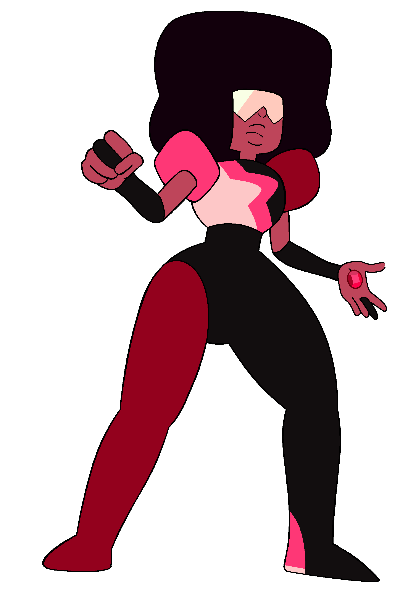

Garnet
Garnet has two red garnets, one embedded in each of her hands. She can use them to summon a pair of gauntlets. She has three different colored eyes which she wears a visor over. She can also temperarly grant others her ability of seeing possible future outcomes by kissing them on the forehead. It has been proven that she is a fusion of the gems, Ruby and Sapphire. She was formed when Sapphire was sent on a mission from Homeworld, and she was assigned three Rubies to protect her. During an attack, two of the Rubies were poofed (their physical form was destroyed), and the last one pushed Sapphire out of harms way. This caused them to fuse by accident. This was unacceptable amoung the Homeworld gems. Their leader, Blue Diamond, was angered at the sight, so she wanted to punish Ruby by breaking her. Sapphire couldn't let this happen, so she grabbed Ruby and ran away to the surface of the Earth. They fell in love and decided to form Garnet again. After they fused, they ran into the Crystal Gems who didn't care that she was a fusion of two different gems. Garnet loves Steven deeply, and she accepts his ideas.